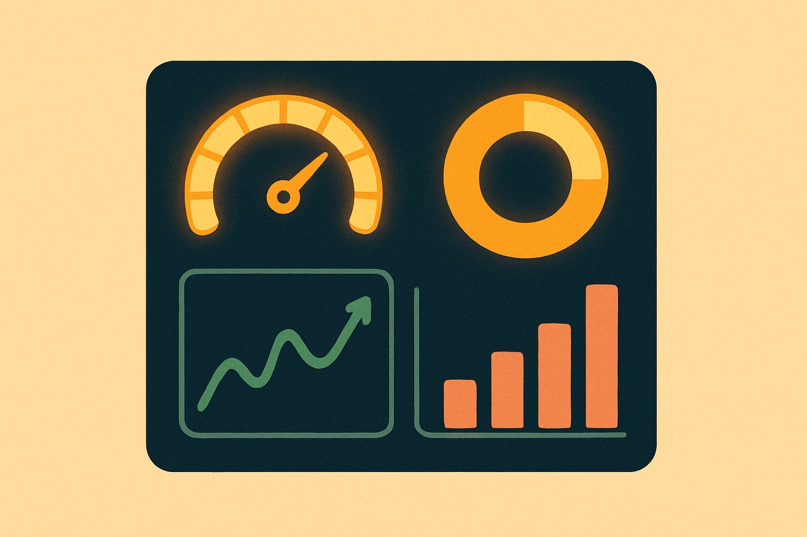
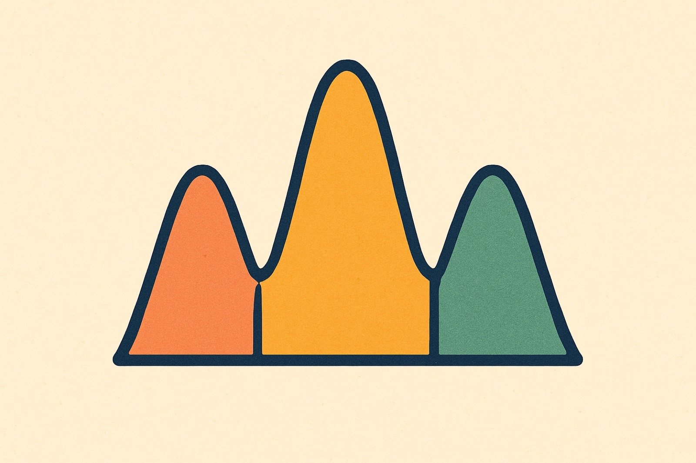
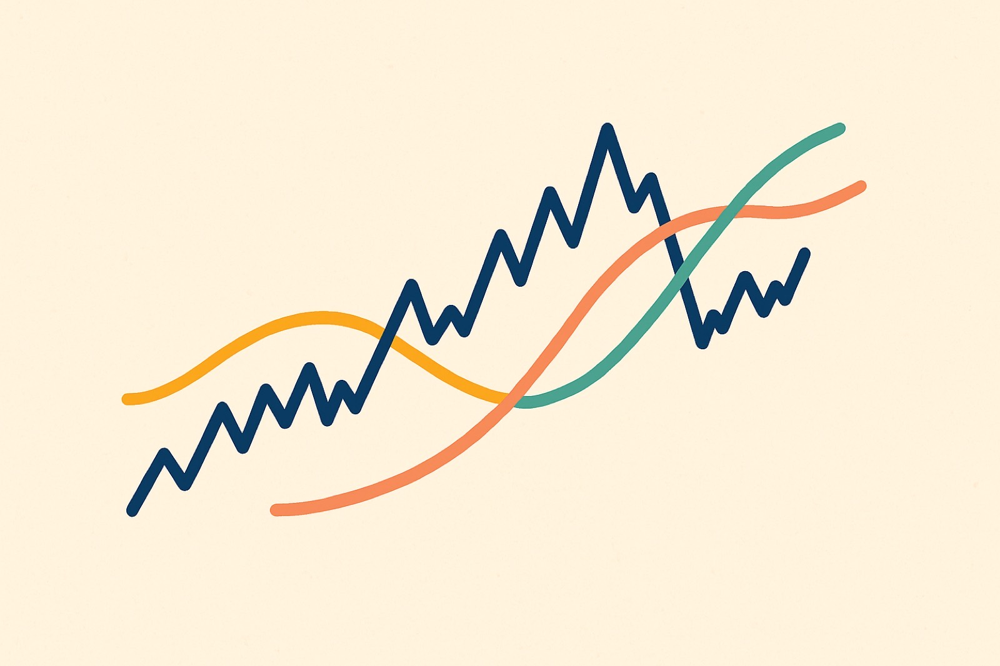
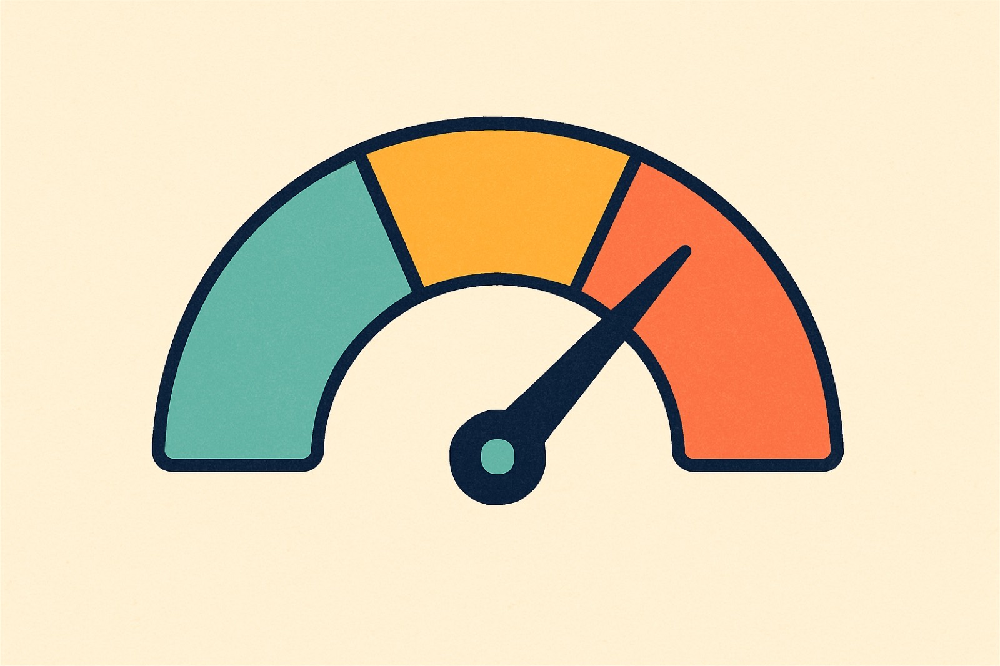

Charts leave clues. Patterns and indicators are the tools that read them, hinting at what price might do next. Never guaranteeing it. In the next few minutes you'll learn the headline few and how to read them honestly.

Because human behavior repeats, a handful of shapes show up again and again. Learn the headline few and you can read a chart faster.

The head and shoulders is the classic reversal: three peaks, a taller head between two lower shoulders, sitting on a neckline.
Head and shoulders, double top, double bottom. Price tests a level twice and either rejects it or holds.
Wedges and flags. A brief pause inside a move that often gives way to the trend picking back up.
A moving average plots the average price over a chosen period, so the noise becomes a smooth, readable line.
Two flavors, one idea. SMA weights every period equally. EMA leans on recent prices, so it reacts faster.
The simple moving average treats every period the same. Smoother, and slower to turn.
The exponential moving average weights recent prices more, so it responds sooner to a shift.

A shorter moving average crosses above a longer one. Momentum is turning up.
A shorter moving average crosses below a longer one. Momentum is rolling over.
Oscillators measure how fast and how far price has moved, swinging inside a fixed range.
The RSI runs from 0 to 100. Above 70 is generally overbought; below 30, generally oversold.
Above 70 overbought, below 30 oversold. A momentum reading from 0 to 100.
Above 80 overbought, below 20 oversold. Same idea, tighter bands.
Drag the slider to set a reading. Watch the zone and its color change as you cross the classic thresholds.

Tap a card to pick it up, then tap the column where it belongs. Read the momentum behind each one.
Five questions. Answer them to earn your points for the lesson.
Patterns like head and shoulders hint at reversals, and volume helps confirm a breakout.
Moving averages smooth price; a golden cross reads bullish, a death cross bearish.
RSI and the stochastic read momentum, not certainty.
Every one of these is a clue, never a guarantee.